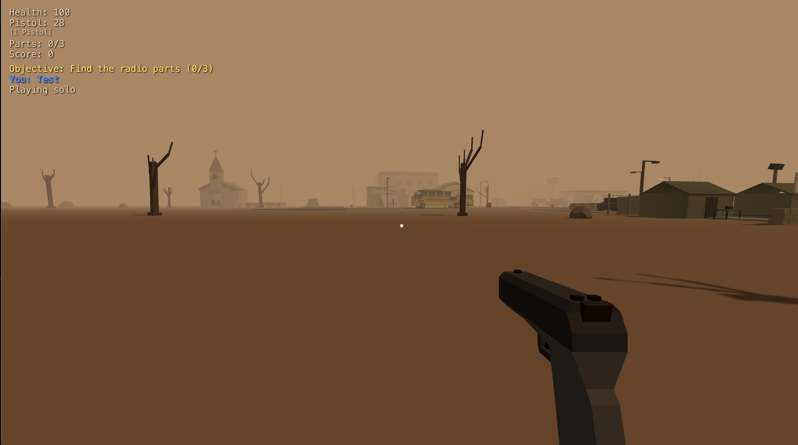

Class project
1. Single-player game
A first-person shooter with physics, custom models and a full objective loop, built for CSCI-310's 3D assignment.
Case Study · Game Development · Networking
A browser survival shooter that started as two CSCI-310 assignments and became my ongoing solo project: a co-op game where friends join a lobby with a code and fight through the same world together.

Class project
A first-person shooter with physics, custom models and a full objective loop, built for CSCI-310's 3D assignment.
Class project
A Node.js + Socket.IO server so players could see each other move, built for the front-end + back-end assignment.
On my own
Split a 5,000-line file into modules, and let one server host many separate games with join codes.
On my own
One shared world per lobby: the same husks, the same objectives, and one win for the whole team.
CSCI-310 asked us to build a 3D application in the browser, then connect a front-end to a back-end. I wanted one project that could do both: a game fun enough that people would actually play it, then the same game rebuilt so friends could play it together.
The premise: a fungal outbreak called the Bloom has turned people into husks. You scavenge three radio parts, repair a dead radio tower, fight down the evac road, and hold the landing zone until the chopper touches down.
Both class versions have been graded, but I'm still building it. Everything from Phase 3 on was done on my own time, because I want it to be a game people genuinely enjoy playing with their friends.
I went from an empty repo to a first playable build in a day, then spent the next few days on what makes a shooter feel good.
The second assignment was to connect the game to a server. My first version focused on one thing: letting players see each other.
You could see your friends walk around, name tags and all, but every player was still running their own copy of the world. Each person had their own husks, their own radio parts and their own tower. You were playing next to each other, not with each other. Fixing that became Phase 4.
After the course: built on my own time.
By this point main.js was closing in on 5,000 lines. Everything worked, but finding a specific function
meant a lot of scrolling and searching, and it was hard to see how the pieces fit together. I split it into modules grouped by what they do:
core/: engine setup, shared game state, and model loading.game/: one file per system, like husks, weapons, pickups, nests, the tower, effects and co-op.world/: the map, with each district and building type in its own file.ui/: the HUD, start menu, lobby panel and input.
Now each file has one job. Changing how husks behave means opening husks.js, not searching a 5,000-line file.
That paid off right away: the co-op work in Phase 4 touched almost every system, and having them separated made it manageable.
I also removed the server's installed packages (node_modules) from the repository so it only holds code I wrote.
The first multiplayer version was one shared server capped at 8 players. If the game ever got more traffic, everyone after the eighth player would be turned away. I didn't want to hit that wall later, so I planned for it early:
K7QM. Friends type it on the start menu to join. Codes skip look-alike characters (0/O, 1/I) so they're easy to read out loud.After the course: built on my own time.
Sharing one world raises a hard question: if two players shoot the same husk at the same moment, whose game is right? My answer was to make one game the source of truth: the host's.
Each kind of shared event has a name and a direction, like hit (teammate to host), hurt (host to one player)
or win (host to everyone). The full list, with who sends each one and who receives it, lives in a comment at the top of coop.js, so the whole system can be understood from one place.
Anything a browser sends can be edited by the person using it, so the server and the games double-check what they receive:
../../ in the static file server, so nobody can read files outside the game folder.The map grew from a few streets into a town with a tower plaza, a North End district and a walled evac route, plus a police station, apartment block, pharmacy, hardware store, diner, gas station, farm and chapel. The police station and apartments have second floors with working stairs that husks can follow you up. There are three weapons (pistol, shotgun, machete), three husk types, Bloom nests that keep spawning husks until you destroy them, and 33 custom Blockbench models, from husks and weapons to church pews and fire hydrants.
Problem: Players could hold space and climb into the sky.
Fix: I added a ground check. A jump only "reloads" when the physics engine reports a collision whose surface normal points mostly upward, so it counts landing on the ground or a crate but not brushing against a wall.
Problem: Enemies moved toward the player correctly but faced the wrong way.
Fix: The Blockbench models were built facing the opposite direction from the one Three.js's lookAt() treats as forward. I turned the model 180° inside its parent object, with a per-model override, so the movement code didn't have to change.
Problem: Buildings made of hundreds of small boxes meant hundreds of draw calls.
Fix: I grouped each building's parts by material and merged them into single meshes, cutting the work the GPU does every frame.
Problem: In a shared world, two players' games can disagree about the same husk.
Fix: One game, the host's, is the source of truth. Everyone else sends requests and copies the result, so there's only ever one answer.
I committed in small, working steps and wrote detailed commit messages, so I could always get back to a playable build. I used AI assistance to rough out some of the box-built building layouts, then reviewed and adjusted them by hand. Knowing when to use a tool and checking what it gives you is part of the job.
Real-time systems are about trade-offs between update rate, bandwidth and smoothness. A shared world needs one source of truth, and every input from a client has to be validated. Organizing code early makes big changes possible later. And shipping something people can actually click and play teaches you more than a feature list does.